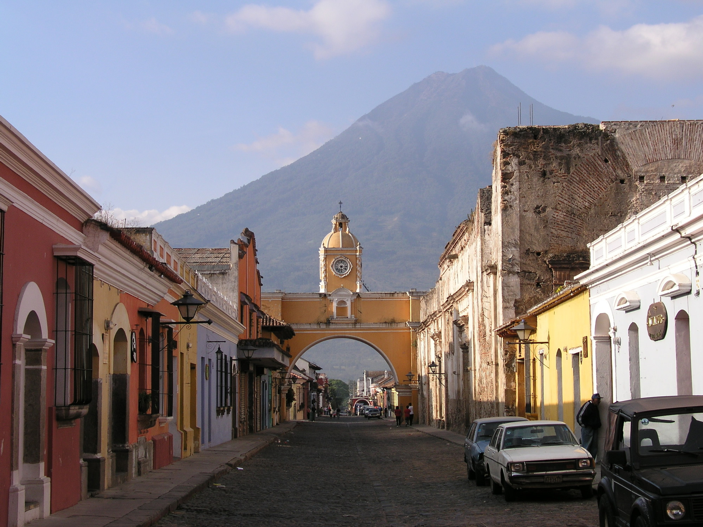

In the humid jungle of northern Guatemala, near the border of Belize, stands one of the greatest archaeological sites in Central America. The well-preserved ruined city of Tikal is one of the best places to visit in Guatemala to learn about Mayan culture.
Tikal was occupied between approximately 600 BC and AD 900, and showcases more than 3,000 structures, ranging from pyramids and temples to plazas and an acropolis. It was one of the most important urban Mayan centers for more than a thousand years and is today one of the largest Mayan archaeological sites of its time period still in existence.
The experience of visiting Tikal is enhanced by the surroundings. Steep pyramids rise above the jungle's lush green canopy populated by birds, monkeys, and other wildlife. Tikal National Park, which encompasses the ruins, is a biosphere reserve, protecting rainforest and wildlife habitat.
Monkeys are prevalent at Tikal. You'll definitely see spider monkeys and, if you don't see the howler monkeys, you'll most certainly hear them.
Antigua Guatemala
If you're looking for a city to settle in for a bit, this is the place to come. With Quality hotels at reasonable rates, trendy restaurants serving excellent food, and plenty of things to do, it's easy to fill your days here.
Antigua Guatemala, often referred to simply as Antigua, is one of the highlights of Guatemala and certainly one of the most beautiful cities in Central America. Surrounded by three volcanoes, this former capital of Guatemala offers a unique glimpse of a city unblemished by modern day concrete buildings and high-rises.
Cobblestone streets are lined with old colonial buildings, some of which show evidence of the earthquakes that have contributed to the city's history. Everywhere in the old city center are incredible churches and convents.
While many of the buildings have been completely restored, some reveal cracks caused by past earthquakes, and some have been reduced to ruins. In many cases, the ruins have been creatively incorporated into more recently constructed buildings, some of which are now hotels. The city has interesting museums to explore along with beautiful old convents that are open to visitors.